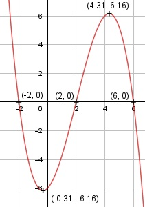

Aufgabe 33 f(X) = - 0,25x3 + 1,5x2 + x - 6 f'(X) = - 0,75x2 + 3x + 1, f''(X) = -1,5x + 3, f'''(X) = -1,5 Definitionsbereich: -∞ < x < ∞ Wertebereich: -∞ < f(X) < ∞ Asymptoten: - Symmetrie: - Nullstellen: -0,25x3 + 1,5x2 + x - 6 = 0 | : (-0,25) x3 - 6x2 - 4 + 24 = 0 Durch Probieren gefunden x = 6. Hornerschema: 1 -6 -4 24 x1 = 6 6 0 -24 --------------------------- 1 0 -4 0 Polynomdivision: -0,25x3 + 1,5x2 + x - 6 : (x - 6) = -0,25x2 + 1 -(-0,25x3 + 1,5x2) ------------------ 0x2 + x - 6 -(x - 6) ---------- 0 x2 - 4 = 0 | +4 x2 = 4 |ⱱ x2,3 = ± 2 N1(6|0), N2(2|0), N3(-2|0) Schnittpunkt mit der y-Achse: f(0) = - 0,25 * 03 + 1,5 * 02 + 0 - 6 = -6 Sy(0|- 6) Extrempunkte: - 0,75x2 + 3x + 1 = 0 A, B, C - Formel: A = -0,75, B = 3, C = 1 x1,2 = x1,2 = x1,2 = -3 ± 3,46 x1,2 = ------------ -1,5 x1 = -0,31 f(-0,31) = -0,25 * (-0,31)3 + 1,5 * (-0,31)2 + + (-0,31) - 6 = - 6,16 x2 = 4,31, f(4,31) = - 0,25 * (4,31)3 + + 1,5 * (4,31)2 + 4,31 - 6 = 6,16 f''(-0,31) = -1,5 * (-0,31) + 3 > 0 --> Tiefpunkt (-0,31|- 6,16) f''(4,31) = -1,5 * 4,31 + 3 < 0 --> Hochpunkt (4,31|6,16) Wendepunkte: -1,5x + 3 = 0 |+1,5x 1,5x = 3 | :1,5 x = 2, f(2) = 0, f'''(2) ≠ 0 --> Wendepunkt (2|0) Graph:
